# 01、面向过程与面向对象
何谓 “面向对象” 的编程思想？ 首先解释一下 “思想”。 先问你个问题：你想做个怎样的人？ 可能你会回答：我想做个好人，孝敬父母，尊重长辈，关爱亲朋… 你看，这就是思想。这是你做人的思想，或者说，是你做人的原则。做人有做人的原则，编程也有编程的原则。这些编程的原则呢，就是编程思想。
面向过程 (POP) 与面向对象 (OOP)
- 面向对象：Object Oriented Programming
- 面向过程：Procedure Oriented Programming
/* | |
* 一、学习面向对象内容的三条主线 | |
* 1.Java 类及类的成员：属性、方法、构造器、代码块、内部类 | |
* 2. 面向对象的三大特征：封装、继承、多态性、(抽象性) | |
* 3. 其它关键字：this、super、static、final、abstract、interface、package、import 等 | |
* | |
* 二、人把大象装进冰箱 | |
* 1. 面向过程：强调的是功能行为，以函数为最小单位，考虑怎么做。 | |
* | |
* ① 打开冰箱 | |
* ② 把大象装进冰箱 | |
* ③ 把冰箱门关住 | |
* | |
* 2. 面向对象：强调具备了功能的对象，以类 / 对象为最小单位，考虑谁来做。 | |
* 人 { | |
* 打开 (冰箱){ | |
* 冰箱。开门 (); | |
* } 操作 (大象){ | |
* 大象。进入 (冰箱); | |
* } 关闭 (冰箱){ | |
* 冰箱。关门 (); | |
* } | |
* } | |
* | |
* 冰箱 { | |
* 开门 (){ | |
* } | |
* 关门 (){ | |
* } | |
* } | |
* | |
* 大象 { | |
* 进入 (冰箱){ | |
* } | |
* } | |
*/ |
面向对象的思想概述
- 程序员从面向过程的执行者转化成了面向对象的指挥者
- 面向对象分析方法分析问题的思路和步骤：
- 根据问题需要，选择问题所针对的现实世界中的实体。
- 从实体中寻找解决问题相关的属性和功能，这些属性和功能就形成了概念世界中的类。
- 把抽象的实体用计算机语言进行描述，形成计算机世界中类的定义。即借助某种程序语言，把类构造成计算机能够识别和处理的数据结构。
- 将类实例化成计算机世界中的对象。对象是计算机世界中解决问题的最终工具。
# 02、 类和对象
/* | |
* 三、面向对象的两个要素： | |
* 类：对一类事物的描述，是抽象的、概念上的定义 | |
* 对象：是实际存在的该类事物的每个个体，因而也称为实 例 (instance)。 | |
* 可以理解为：类 = 抽象概念的人；对象 = 实实在在的某个人 | |
* 面向对象程序设计的重点是类的设计； | |
* 设计类，其实就是设计类的成员。 | |
*/ |
# 2.1、Java 类及类的成员
现实世界的生物体，大到鲸鱼，小到蚂蚁，都是由最基本的细胞构成的。同理，Java 代码世界是由诸多个不同功能的类构成的。
现实生物世界中的细胞又是由什么构成的呢？细胞核、细胞质、… 那么，Java 中用类 class 来描述事物也是如此。常见的类的成员有：
- 属性：对应类中的成员变量
- 行为：对应类中的成员方法
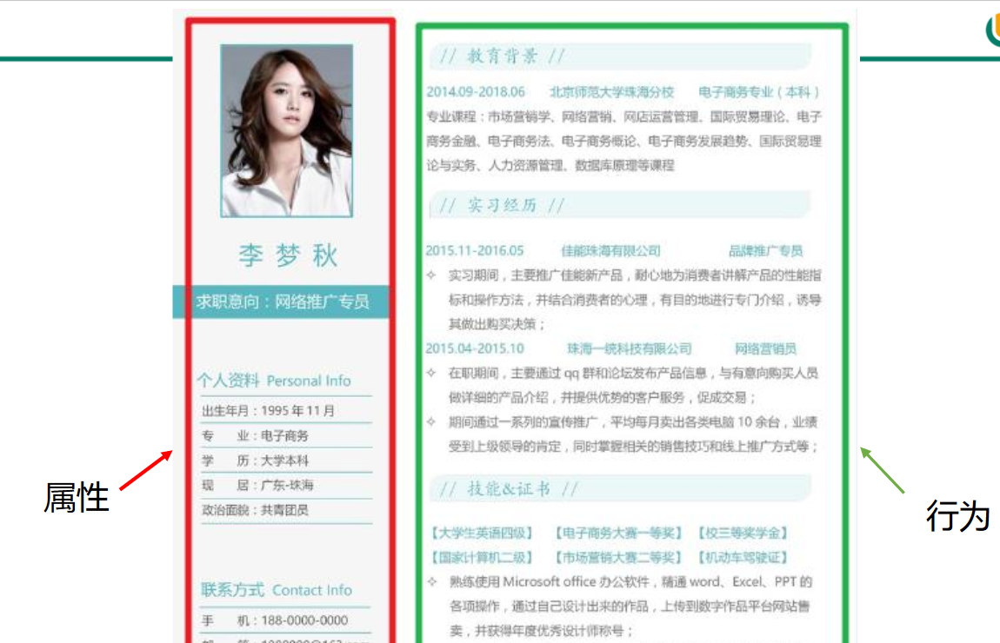
# 2.2、类与对象的创建及使用
/* | |
* 一、设计类、其实就是设计类的成员 | |
* Field = 属性 = 成员变量 = 域、字段 | |
* Method = (成员) 方法 = 函数 | |
* | |
* 创建类 = 类的实例化 = 实例化类 | |
* | |
* 二。类和对象的使用 (面向对象思想落地的实现) | |
* 1. 创建类，设计类的成员 | |
* 2. 创建类的对象 | |
* 3. 通过 “对象。属性” 或 “对象。方法” 调用对象的结构 | |
* 三、如果创建类一个类的多个对象，则每个对象都独立的拥有一套类的属性。(非 static 的) | |
* 意味着：如果我们修改一个对象的属性 a，则不影响另外一个对象属性 a 的值。 | |
*/ | |
// 测试类 | |
public class PersonTest { | |
public static void main(String[] args) { | |
//2. 创建 Person 类的对象 | |
// 创建对象语法：类名对象名 = new 类名 (); | |
Person p1 = new Person(); | |
//Scanner scan = new Scanner(System.in); | |
// 调用类的结构：属性、方法 | |
// 调用属性:“对象。属性” | |
p1.name = "Tom"; | |
p1.age = 25; | |
p1.isMale = true; | |
System.out.println(p1.name); | |
// 调用方法:“对象。方法” | |
p1.eat(); | |
p1.sleep(); | |
p1.talk("chinese"); | |
//********************** | |
Person p2 = new Person(); | |
System.out.println(p2.name); //null | |
System.out.println(p2.isMale); | |
//********************** | |
// 将 p1 变量保存的对象地址值赋给 p3, 导致 p1 和 p3 指向了堆空间中的一个对象实体。 | |
Person p3 = p1; | |
System.out.println(p3.name); | |
p3.age = 10; | |
System.out.println(p1.age); //10 | |
} | |
} | |
/* | |
* 类的语法格式： | |
* 修饰符 class 类名 { | |
* 属性声明； | |
* 方法声明； | |
* } | |
* 说明：修饰符 public：类可以被任意访问类的正文要用 { } 括起来 | |
*/ | |
//1. 创建类，设计类的成员 | |
class Person{ | |
// 属性：对应类中的成员变量 | |
String name; | |
int age; | |
boolean isMale; | |
// 方法：对应类中的成员方法 | |
public void eat(){ | |
System.out.println("吃饭"); | |
} | |
public void sleep(){ | |
System.out.println("睡觉"); | |
} | |
public void talk(String language){ | |
System.out.println("人可以说话，使用的是：" + language); | |
} | |
} |
# 2.3、对象的创建和使用：内存解析
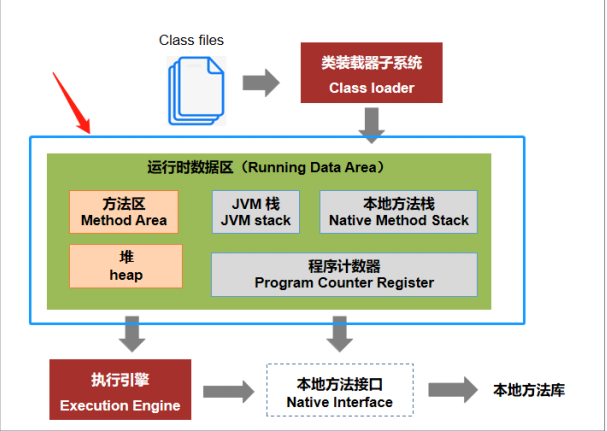
方法区和堆是所有线程共享的内存区域；而 JVM 栈、本地方法栈和程序员计数器是运行时线程私有的内存区域。
- 堆（Heap），是 Java 虚拟机内存中最大的一块。在虚拟机启动时创建。此内存区域的唯一目的就是存放对象实例，几乎所有的对象实例都在这里分配内存
- JVM 栈（JVM Stacks）。虚拟机栈描述的是 Java 方法执行的内存模型：每个方法被执行的时候都会同时创建一个栈帧（Stack Frame）用于存储局部变量表、操作栈、动态链接、方法出口等信息。每一个方法被调用直至执行完成的过程，就对应着一个栈帧在虚拟机栈中从入栈到出栈的过程。
- 方法区（MethodArea），用于存储已被虚拟机加载的类信息、常量、静态变量、即时编译器编译后的代码等数据。
- 程序计数器（Program Counter Register）, 程序计数器（Program Counter Register）是一块较小的内存空间，它的作用可以看做是当前线程所执行的字节码的行号指示器。
- 本地方法栈（Native Method Stacks）, 本地方法栈（Native Method Stacks）与虚拟机栈所发挥的作用是非常相似的，其区别不过是虚拟机栈为虚拟机执行 Java 方法（也就是字节码）服务，而本地方法栈则是为虚拟机使用到的 Native 方法服务。
面试题
java 中的对象不一定是在堆上分配的，因为 JVM 通过逃逸分析，能够分析出一个新对象的使用范围，并以此确定是否要将这个对象分配到堆上 ；如果 JVM 发现某些对象没有逃逸出方法，就很有可能被优化成在栈上分配；
备注：栈分配可以快速地在栈帧上创建和销毁对象，不用再将对象分配到堆空间，可以有效地减少 JVM 垃圾回收的压力。参考：https://baijiahao.baidu.com/s?id=1678511797907822583&wfr=spider&for=pc
1、案例 1
Person p1= newPerson(); | |
p1.name = "Tom"; | |
p1.isMale = true; | |
Person p2 = new Person(); | |
sysout(p2.name);//null | |
Person p3 = p1; | |
p3.age = 10; |
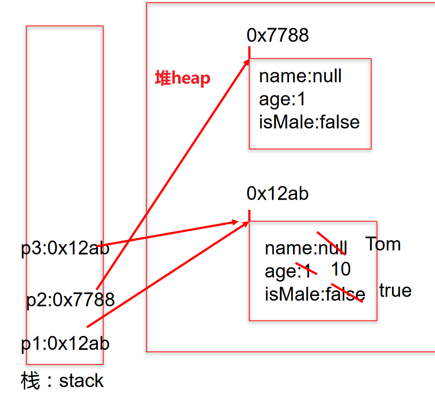
2、案例 2
Person p1= newPerson(); | |
p1.name = "胡利民"; | |
p1.age = 23; | |
Person p2 = new Person(); | |
p2.age = 10; |
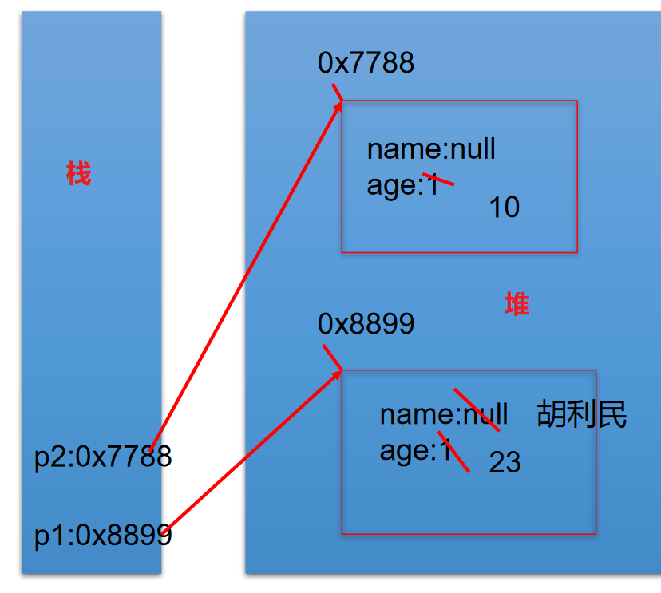
# 03、类的成员之一：属性
/* | |
* 类中属性的使用 | |
* | |
* 属性 (成员变量) vs 局部变量 | |
* 1. 相同点: | |
* 1.1 定义变量的格式：数据类型 变量名 = 变量值 | |
* 1.2 先声明，后使用 | |
* 1.3 变量都有其对应的作用域 | |
* | |
* 2. 不同点: | |
* 2.1 在类中声明的位置不同 | |
* 属性：直接定义在类的一对 {} 内 | |
* 局部变量：声明在方法内、方法形参、构造器形参、构造器内部的变量 | |
* | |
* 2.2 关于权限修饰符的不同 | |
* 属性：可以在声明属性时，指明其权限，使用权限修饰符。 | |
* 常用的权限修饰符:private、public、缺省、protected | |
* 目前声明属性时，都使用缺省即可。 | |
* 局部变量：不可以使用权限修饰符。 | |
* | |
* 2.3 默认初始化值的情况: | |
* 属性：类的属性，根据其类型，都有默认初始化值。 | |
* 整型 (byte、short、int、long):0 | |
* 浮点型 (float、double):0.0 | |
* 字符型 (char):0 (或‘\u0000’) | |
* 布尔型 (boolean):false | |
* | |
* 引用数据类型 (类、数组、接口):null | |
* | |
* 局部变量：没有默认初始化值 | |
* 意味着：在调用局部变量之前，一定要显式赋值。 | |
* 特别地：形参在调用时，赋值即可。例，45 行 | |
* | |
* 2.4 在内存中加载的位置，亦各不相同。 | |
* 属性：加载到堆空间中 (非 static) | |
* 局部变量：加载到栈空间 | |
*/ | |
public class UserTest { | |
public static void main(String[] args) { | |
User u1 = new User(); | |
System.out.println(u1.name); | |
System.out.println(u1.age); | |
System.out.println(u1.isMale); | |
u1.talk("俄语"); | |
} | |
} | |
class User{ | |
// 属性 (或成员变量) | |
String name; // 不加 private 即为缺省 | |
public int age; // 不加 public 即为缺省 | |
boolean isMale; | |
public void talk(String language){ //language: 形参，也是局部变量 | |
System.out.println("我们使用" + language + "进行交流。"); | |
} | |
public void eat(){ | |
String food = "石头饼"; // 石头饼：局部变量 | |
System.out.println("北方人喜欢吃:" + food); | |
} | |
} |
1、练习 1
/* | |
编写教师类和学生类，并通过测试类创建对象进行测试 | |
Student 类 | |
属性: | |
name:String age:int major:String interests:String | |
方法:say () 返回学生的个人信息 | |
Teacher 类 | |
属性: | |
name:String age:int teachAge:int course:String | |
方法:say () 输出教师的个人信息 | |
*/ | |
public class School { | |
public static void main(String[] args) { | |
Student stu = new Student(); | |
stu.name = "小明"; | |
stu.age = 16; | |
Teacher tea = new Teacher(); | |
tea.name = "王老师"; | |
tea.age = 27; | |
tea.say(stu.name,stu.age); | |
stu.say(tea.name, tea.age); | |
} | |
} | |
class Student{ | |
String name; | |
int age; | |
String major; | |
String interests; | |
void say(String name, int age){ | |
System.out.println("这个学生是："+name+"年龄是："+age); } | |
} | |
class Teacher{ | |
String name; | |
int age; | |
String teachAge; | |
String course; | |
void say(String name, int age){ | |
System.out.println("这个老师是："+name+"年龄是："+age); | |
} | |
} |
# 04、类成员之二：方法
# 4.1、类中方法的声明和使用
/* | |
* 类中方法的声明和使用 | |
* | |
* 方法：描述类应该具有的功能。 | |
* 比如：Math 类：sqrt ()\random () \... | |
* Scanner 类：nextXxx () ... | |
* Arrays 类：sort () \ binarySearch () \ toString () \ equals () \ ... | |
* | |
* 1. 举例： | |
* public void eat (){} | |
* public void sleep (int hour){} | |
* public String getName (){} | |
* public String getNation (String nation){} | |
* | |
* 2. 方法的声明：权限修饰符 返回值类型 方法名 (形参列表){ | |
* 方法体 | |
* } | |
* 注意：static、final、abstract 来修饰的方法，后面再讲。 | |
* | |
* 3. 说明： | |
* 3.1 关于权限修饰符：默认方法的权限修饰符先都使用 public | |
* Java 规定的 4 种权限修饰符：private、public、缺省、protected --> 封装性再细说 | |
* | |
* 3.2 返回值类型： 有返回值 vs 没有返回值 | |
* 3.2.1 如果方法有返回值，则必须在方法声明时，指定返回值的类型。同时，方法中，需要使用 | |
* return 关键字来返回指定类型的变量或常量：“return 数据”。 | |
* 如果方法没有返回值，则方法声明时，使用 void 来表示。通常，没有返回值的方法中，就不需要 | |
* 使用 return. 但是，如果使用的话，只能 “return;” 表示结束此方法的意思。 | |
* | |
* 3.2.2 我们定义方法该不该有返回值？ | |
* ① 题目要求 | |
* ② 凭经验：具体问题具体分析 | |
* | |
* 3.3 方法名：属于标识符，遵循标识符的规则和规范，“见名知意” | |
* 3.4 形参列表：方法名可以声明 0 个、1 个，或多个形参。 | |
* 3.4.1 格式：数据类型 1 形参 1，数据类型 2 形参 2,... | |
* | |
* 3.4.2 我们定义方法时，该不该定义形参？ | |
* ① 题目要求 | |
* ② 凭经验，具体问题具体分析 | |
* 3.5 方法体：方法功能的体现。 | |
* 4. return 关键字的使用： | |
* 1. 使用范围：使用在方法体中 | |
* 2. 作业:① 结束方法 | |
* ② 针对于有返回值类型的方法，使用 "return 数据" 方法返回所要的数据。 | |
* 3. 注意点:return 关键字后不可声明执行语句。 | |
* 5. 方法的使用中，可以调用当前类的属性或方法。 | |
* 特殊的：方法 A 中又调用了方法 A: 递归方法。 | |
* 方法中不能定义其他方法。 | |
*/ | |
public class CustomerTest { | |
public static void main(String[] args) { | |
Customer cust1 = new Customer(); | |
cust1.eat(); | |
// 测试形参是否需要设置的问题 | |
// int[] arr = new int[]{3,4,5,2,5}; | |
// cust1.sort(); | |
cust1.sleep(8); | |
} | |
} | |
// 客户类 | |
class Customer{ | |
// 属性 | |
String name; | |
int age; | |
boolean isMale; | |
// 方法 | |
public void eat(){ | |
System.out.println("客户吃饭"); | |
return; | |
//return 后不可以声明表达式 | |
// System.out.println("hello"); | |
} | |
public void sleep(int hour){ | |
System.out.println("休息了" + hour + "个小时"); | |
eat(); | |
// sleep(10); | |
} | |
public String getName(){ | |
if(age > 18){ | |
return name; | |
}else{ | |
return "Tom"; | |
} | |
} | |
public String getNation(String nation){ | |
String info = "我的国籍是：" + nation; | |
return info; | |
} | |
// 体会形参是否需要设置的问题 | |
// public void sort(int[] arr){ | |
// | |
// } | |
// public void sort(){ | |
// int[] arr = new int[]{3,4,5,2,5,63,2,5}; | |
// //。。。。 | |
// } | |
public void info(){ | |
// 错误的 | |
// public void swim(){ | |
// | |
// } | |
} | |
} |
1、练习 1
创建一个 Person 类，其定义如下：
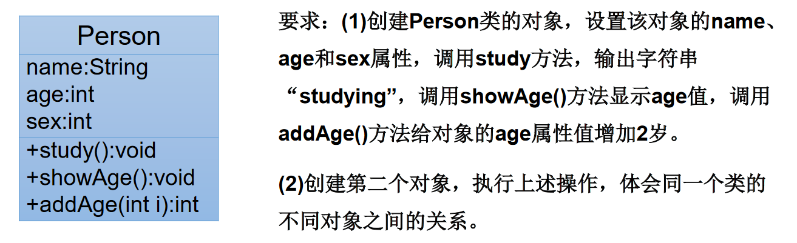
public class Person { | |
String name; | |
int age; | |
/* | |
* sex:1 表示为男性 | |
* sex:0 表示为女性 | |
*/ | |
int sex; | |
public void study(){ | |
System.out.println("studying"); | |
} | |
public void showAge(){ | |
System.out.println("age:" + age); | |
} | |
public int addAge(int i){ | |
age += i; | |
return age; | |
} | |
} |
测试类
/* | |
* 要求: | |
* (1) 创建 Person 类的对象，设置该对象的 name、age 和 sex 属性， | |
* 调用 study 方法，输出字符串 “studying”， | |
* 调用 showAge () 方法显示 age 值， | |
* 调用 addAge () 方法给对象的 age 属性值增加 2 岁。 | |
* (2) 创建第二个对象，执行上述操作，体会同一个类的不同对象之间的关系。 | |
* | |
*/ | |
public class PersonTest { | |
public static void main(String[] args) { | |
Person p1 = new Person(); | |
p1.name = "Tom"; | |
p1.age = 18; | |
p1.sex = 1; | |
p1.study(); | |
p1.showAge(); | |
int newAge = p1.addAge(2); | |
System.out.println(p1.name + "的年龄为" + newAge); | |
System.out.println(p1.age); //20 | |
//******************************* | |
Person p2 = new Person(); | |
p2.showAge(); //0 | |
p2.addAge(10); | |
p2.showAge(); //10 | |
p1.showAge(); //20 | |
} | |
} |
2、练习 2
/* | |
* 2. 利用面向对象的编程方法，设计类 Circle 计算圆的面积。 | |
*/ | |
// 测试类 | |
public class CircleTest { | |
public static void main(String[] args) { | |
Circle c1 = new Circle(); | |
c1.radius = 2.1; | |
// 对应方式一: | |
// double area = c1.findArea(); | |
// System.out.println(area); | |
// 对应方式二: | |
c1.findArea(); | |
// 错误的调用 | |
double area = c1.findArea(3.4); | |
System.out.println(area); | |
} | |
} | |
// 圆：3.14*r*r | |
class Circle{ | |
// 属性 | |
double radius; | |
// 圆的面积方法 | |
// 方法 1： | |
// public double findArea(){ | |
// double area = 3.14 * radius * radius; | |
// return area; | |
// } | |
// 方法 2： | |
public void findArea(){ | |
double area = Math.PI * radius * radius; | |
System.out.println("面积为:" + area); | |
} | |
// 错误情况: | |
public double findArea(Double r){ | |
double area = 3.14 * r * r; | |
return area; | |
} | |
} |
3、练习 3
/* | |
* 3.1 编写程序，声明一个 method 方法，在方法中打印一个 10*8 的 * 型矩形，在 main 方法中调用该方法。 | |
* 3.2 修改上一个程序，在 method 方法中，除打印一个 10*8 的 * 型矩形外，再计算该矩形的面积， | |
* 并将其作为方法返回值。在 main 方法中调用该方法，接收返回的面积值并打印。 | |
* | |
* 3.3 修改上一个程序，在 method 方法提供 m 和 n 两个参数，方法中打印一个 m*n 的 * 型矩形， | |
* 并计算该矩形的面积，将其作为方法返回值。在 main 方法中调用该方法，接收返回的面积值并打印。 | |
* | |
*/ | |
public class ExerTest { | |
public static void main(String[] args) { | |
ExerTest esr = new ExerTest(); | |
//3.1 测试 | |
// esr.method(); | |
//3.2 测试 | |
// 方式一： | |
// int area = esr.method(); | |
// System.out.println ("面积为:" + area); | |
// 方式二: | |
// System.out.println ("面积为:" + esr.method ()); | |
//3.3 测试 | |
System.out.println("面积为:" + esr.method(6,5)); | |
} | |
//3.1 | |
// public void method(){ | |
// for(int i = 0;i < 10;i++){ | |
// for(int j = 0;j < 8;j++){ | |
// System.out.print("* "); | |
// } | |
// System.out.println(); | |
// } | |
// } | |
//3.2 | |
// public int method(){ | |
// for(int i = 0;i < 10;i++){ | |
// for(int j = 0;j < 8;j++){ | |
// System.out.print("* "); | |
// } | |
// System.out.println(); | |
// } | |
// return 10 * 8; | |
// } | |
//3.3 | |
public int method(int m,int n){ | |
for(int i = 0;i < m;i++){ | |
for(int j = 0;j < n;j++){ | |
System.out.print("* "); | |
} | |
System.out.println(); | |
} | |
return m * n; | |
} | |
} |
4、练习四
/* | |
* 4. 对象数组题目：定义类 Student，包含三个属性： | |
* 学号 number (int)，年级 state (int)，成绩 score (int)。 | |
* 创建 20 个学生对象，学号为 1 到 20，年级和成绩都由随机数确定。 | |
* 问题一：打印出 3 年级 (state 值为 3）的学生信息。 | |
* 问题二：使用冒泡排序按学生成绩排序，并遍历所有学生信息 | |
* 提示： 1) 生成随机数：Math.random ()，返回值类型 double; | |
* 2) 四舍五入取整：Math.round (double d)，返回值类型 long。 | |
* | |
*/ | |
public class StudentTest { | |
public static void main(String[] args) { | |
// 声明一个 Student 类型的数组 | |
Student[] stu = new Student[20]; | |
for(int i = 0;i <stu.length;i++){ | |
// 给数组元素赋值 | |
stu[i] = new Student(); | |
// 给 Student 的对象的属性赋值 | |
stu[i].number = i + 1; | |
// 年级:[1,6] | |
stu[i].state = (int)(Math.random() * (6 - 1 + 1) + 1); | |
// 成绩:[0,100] | |
stu[i].score = (int)(Math.random() * (100 - 0 + 1)); | |
} | |
// 遍历学生数组 | |
for(int i = 0;i < stu.length;i++){ | |
// System.out.println(stu[i].number + "," + stu[i].state | |
// + "," + stu[i].score); | |
System.out.println(stu[i].info()); | |
} | |
System.out.println("*********以下是问题1*********"); | |
// 问题一：打印出 3 年级 (state 值为 3）的学生信息。 | |
for(int i = 0;i < stu.length;i++){ | |
if(stu[i].state == 3){ | |
System.out.println(stu[i].info()); | |
} | |
} | |
System.out.println("********以下是问题2**********"); | |
// 问题二：使用冒泡排序按学生成绩排序，并遍历所有学生信息。 | |
for(int i = 0;i < stu.length - 1;i++){ | |
for(int j = 0;j <stu.length - 1 - i;j++){ | |
if(stu[j].score >stu[j+1].score){ | |
// 如果需要换序，交换的是数组的元素，Student 对象！！！ | |
Student temp = stu[j]; | |
stu[j] = stu[j+1]; | |
stu[j+1] = temp; | |
} | |
} | |
} | |
// 遍历学生数组 | |
for(int i = 0;i < stu.length;i++){ | |
System.out.println(stu[i].info()); | |
} | |
} | |
} | |
class Student{ | |
int number; // 学号 | |
int state; // 年级 | |
int score; // 成绩 | |
// 显示学生信息的方法 | |
public String info(){ | |
return "学号:" + number + ",年级:" + state + ",成绩:" + score; | |
} | |
} |
4-1、练习四优化
/* | |
* 4. 对象数组题目：定义类 Student，包含三个属性： | |
* 学号 number (int)，年级 state (int)，成绩 score (int)。 | |
* 创建 20 个学生对象，学号为 1 到 20，年级和成绩都由随机数确定。 | |
* 问题一：打印出 3 年级 (state 值为 3）的学生信息。 | |
* 问题二：使用冒泡排序按学生成绩排序，并遍历所有学生信息 | |
* 提示： 1) 生成随机数：Math.random ()，返回值类型 double; | |
* 2) 四舍五入取整：Math.round (double d)，返回值类型 long。 | |
* | |
* 此代码是对 StudentTest.java 的改进，将操作数组的功能封装到方法中。 | |
*/ | |
public class StudentTest2 { | |
public static void main(String[] args) { | |
// 声明一个 Student 类型的数组 | |
Student2[] stu = new Student2[20]; | |
for(int i = 0;i <stu.length;i++){ | |
// 给数组元素赋值 | |
stu[i] = new Student2(); | |
// 给 Student 的对象的属性赋值 | |
stu[i].number = i + 1; | |
// 年级:[1,6] | |
stu[i].state = (int)(Math.random() * (6 - 1 + 1) + 1); | |
// 成绩:[0,100] | |
stu[i].score = (int)(Math.random() * (100 - 0 + 1)); | |
} | |
StudentTest2 test = new StudentTest2(); | |
// 遍历学生数组 | |
test.print(stu); | |
System.out.println("*********以下是问题1*********"); | |
// 问题一：打印出 3 年级 (state 值为 3）的学生信息。 | |
test.searchState(stu, 3); | |
System.out.println("********以下是问题2**********"); | |
// 问题二：使用冒泡排序按学生成绩排序，并遍历所有学生信息。 | |
test.sort(stu); | |
// 遍历学生数组 | |
for(int i = 0;i < stu.length;i++){ | |
System.out.println(stu[i].info()); | |
} | |
} | |
/** | |
* | |
* @Description 遍历 Student [] 数组的操作 | |
*/ | |
public void print(Student2[] stu){ | |
for(int i = 0;i < stu.length;i++){ | |
System.out.println(stu[i].info()); | |
} | |
} | |
/** | |
* | |
* @Description 查找 Student 数组中指定年级的学习信息 | |
*/ | |
public void searchState(Student2[] stu,int state){ | |
for(int i = 0;i < stu.length;i++){ | |
if(stu[i].state == state){ | |
System.out.println(stu[i].info()); | |
} | |
} | |
} | |
/** | |
* | |
* @Description 给 Student 数组排序 | |
*/ | |
public void sort(Student2[] stu){ | |
for(int i = 0;i < stu.length - 1;i++){ | |
for(int j = 0;j <stu.length - 1 - i;j++){ | |
if(stu[j].score >stu[j+1].score){ | |
// 如果需要换序，交换的是数组的元素，Student 对象！！！ | |
Student2 temp = stu[j]; | |
stu[j] = stu[j+1]; | |
stu[j+1] = temp; | |
} | |
} | |
} | |
} | |
} | |
class Student2{ | |
int number; // 学号 | |
int state; // 年级 | |
int score; // 成绩 | |
// 显示学生信息的方法 | |
public String info(){ | |
return "学号:" + number + ",年级:" + state + ",成绩:" + score; | |
} | |
} |
# 4.2、理解 “万事万物皆对象”
/* 1. 在 Java 语言范畴中，我们都将功能、结构等封装到类中，通过类的实例化，来调用具体的功能结构。 | |
* 》Scanner,String 等 | |
* 》文件：File | |
* 》网络资源：URL | |
* 2. 涉及到 Java 语言与前端 html、后端的数据库交互时，前后端的结构在 Java 层面交互时，都体现为类、对象。 | |
*/ |
# 4.3、对象数组的内存解析
/* 引用类型的变量，只可能存储量两类值：null 或地址值（含变量类型）*/ | |
Student[] stus= newStudent[5]; | |
stus[0] = new Student(); | |
sysout(stus[0].state);//1 | |
sysout(stus[1]);//null | |
sysout(stus[1].number);// 异常 | |
stus[1] = new Student(); | |
sysout(stus[1].number);//0 | |
class Student{ | |
int number;// 学号 | |
int state = 1;// 年级 | |
int score;// 成绩 | |
} |
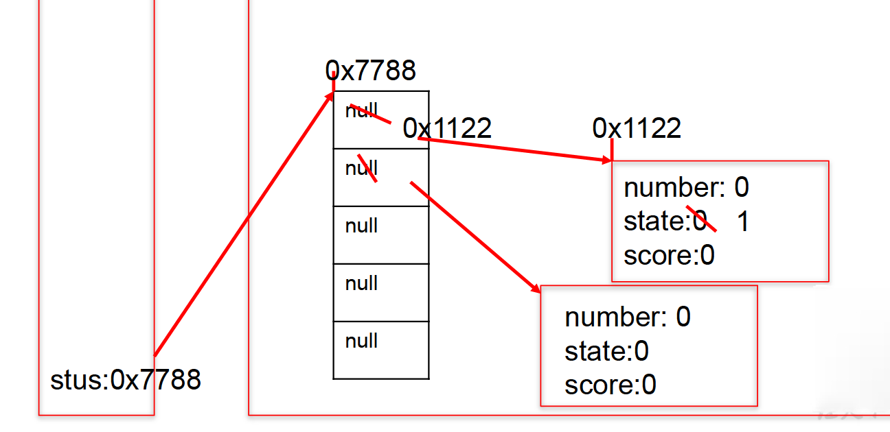
# 4.4、匿名对象的使用
/* | |
* 三、匿名对象的使用 | |
* 1. 理解：我们创建的对象，没有显示的赋值给一个变量名。即为匿名对象。 | |
* 2. 特征：匿名对象只能调用一次。 | |
* 3. 使用：如下 | |
*/ | |
public class InstanceTest { | |
public static void main(String[] args) { | |
Phone p = new Phone(); | |
// p = null; | |
System.out.println(p); | |
p.sendEmail(); | |
p.playGame(); | |
// 匿名对象 | |
// new Phone().sendEmail(); | |
// new Phone().playGame(); | |
new Phone().price = 1999; | |
new Phone().showPrice(); //0.0 | |
//******************************* | |
PhoneMall mall = new PhoneMall(); | |
// mall.show(p); | |
// 匿名对象的使用 | |
mall.show(new Phone()); | |
} | |
} | |
class PhoneMall{ | |
public void show(Phone phone){ | |
phone.sendEmail(); | |
phone.playGame(); | |
} | |
} | |
class Phone{ | |
double price; // 价格 | |
public void sendEmail(){ | |
System.out.println("发邮件"); | |
} | |
public void playGame(){ | |
System.out.println("打游戏"); | |
} | |
public void showPrice(){ | |
System.out.println("手机价格为:" + price); | |
} | |
} |
# 4.5、自定义数组的工具类
1、工具类
/* | |
* 自定义数组工具类 | |
*/ | |
public class ArrayUtil { | |
// 求数组的最大值 | |
public int getMax(int[] arr) { | |
int maxValue = arr[0]; | |
for (int i = 1; i < arr.length; i++) { | |
if (maxValue < arr[i]) { | |
maxValue = arr[i]; | |
} | |
} | |
return maxValue; | |
} | |
// 求数组的最小值 | |
public int getMin(int[] arr) { | |
int minValue = arr[0]; | |
for (int i = 1; i < arr.length; i++) { | |
if (minValue > arr[i]) { | |
minValue = arr[i]; | |
} | |
} | |
return minValue; | |
} | |
// 求数组总和 | |
public int getSum(int[] arr) { | |
int sum = 0; | |
for (int i = 0; i < arr.length; i++) { | |
sum += arr[i]; | |
} | |
return sum; | |
} | |
// 求数组平均值 | |
public int getAvg(int[] arr) { | |
int avgValue = getSum(arr) / arr.length; | |
return avgValue; | |
} | |
// 反转数组 | |
public void reverse(int[] arr) { | |
for (int i = 0; i < arr.length / 2; i++) { | |
int temp = arr[i]; | |
arr[i] = arr[arr.length - i - 1]; | |
arr[arr.length - i - 1] = temp; | |
} | |
} | |
// 复制数组 | |
public int[] copy(int[] arr) { | |
int[] arr1 = new int[arr.length]; | |
for (int i = 0; i < arr1.length; i++) { | |
arr1[i] = arr[i]; | |
} | |
return null; | |
} | |
// 数组排序 | |
public void sort(int[] arr) { | |
for (int i = 0; i < arr.length - 1; i++) { | |
for (int j = 0; j < arr.length - 1 - i; j++) { | |
if (arr[j] > arr[j + 1]) { | |
int temp = arr[j]; | |
arr[j] = arr[j + 1]; | |
arr[j + 1] = temp; | |
} | |
} | |
} | |
} | |
// 遍历数组 | |
public void print(int[] arr) { | |
System.out.print("["); | |
for (int i = 0; i < arr.length; i++) { | |
System.out.print(arr[i] + ","); | |
} | |
System.out.println("]"); | |
} | |
// 查找指定元素 | |
public int getIndex(int[] arr, int dest) { | |
// 线性查找 | |
for (int i = 0; i < arr.length; i++) { | |
if (dest==arr[i]) { | |
return i; | |
} | |
} | |
return -1; | |
} | |
} |
2、测试类
/** | |
* @Description 测试类 | |
* | |
*/ | |
public class ArrayUtilTest { | |
public static void main(String[] args) { | |
ArrayUtil util = new ArrayUtil(); | |
int[] arr = new int[]{ 32,5,26,74,0,96,14,-98,25}; | |
int max = util.getMax(arr); | |
System.out.println("最大值为:" + max); | |
// System.out.print ("排序前:"); | |
// util.print(arr); | |
// | |
// util.sort(arr); | |
// System.out.print ("排序后:"); | |
// util.print(arr); | |
System.out.println("查找:"); | |
int index = util.getIndex(arr, 5); | |
if(index > 0){ | |
System.out.println("找到了，索引地址:" + index); | |
}else{ | |
System.out.println("没找到"); | |
} | |
} | |
} |
# 4.6、方法的重载 (overload)
/* | |
* 方法的重载 (overload) loading... | |
* | |
* 1. 定义：在同一个类中，允许存在一个以上的同名方法，只要它们的参数个数或者参数类型不同即可。 | |
* | |
* “两同一不同”: 同一个类、相同方法名 | |
* 参数列表不同：参数个数不同，参数类型不同 | |
* | |
* 2. 举例: | |
* Arrays 类中重载的 sort () /binarySearch () | |
* | |
* 3. 判断是否重载 | |
* 与方法的返回值类型、权限修饰符、形参变量名、方法体都无关。 | |
* | |
* 4. 在通过对象调用方法时，如何确定某一个指定的方法： | |
* 方法名 ---》参数列表 | |
*/ | |
public class OverLoadTest { | |
public static void main(String[] args) { | |
OverLoadTest test = new OverLoadTest(); | |
test.getSum(1, 2); // 调用的第一个，输出 1 | |
} | |
// 如下的四个方法构成了重载 | |
public void getSum(int i,int j){ | |
System.out.println("1"); | |
} | |
public void getSum(double d1,double d2){ | |
System.out.println("2"); | |
} | |
public void getSum(String s,int i){ | |
System.out.println("3"); | |
} | |
public void getSum(int i,String s){ | |
} | |
// 以下 3 个是错误的重载 | |
// public int getSum(int i,int j){ | |
// return 0; | |
// } | |
// public void getSum(int m,int n){ | |
// | |
// } | |
// private void getSum(int i,int j){ | |
// | |
// } | |
} |
1、举例
1.判断：与void show(int a,char b,double c){ }构成重载的有： | |
a)void show(int x,char y,double z){ } // no | |
b)int show(int a,double c,char b){ } // yes | |
c) void show(int a,double c,char b){ } // yes | |
d) boolean show(int c,char b){ } // yes | |
e) void show(double c){ } // yes | |
f) double show(int x,char y,double z){ } // no | |
g) void shows(){ double c} // no |
2、编程
/* | |
* 1. 编写程序，定义三个重载方法并调用。方法名为 mOL。 | |
* 三个方法分别接收一个 int 参数、两个 int 参数、一个字符串参数。 | |
* 分别执行平方运算并输出结果，相乘并输出结果，输出字符串信息。 | |
* 在主类的 main () 方法中分别用参数区别调用三个方法。 | |
* 2. 定义三个重载方法 max ()， | |
* 第一个方法求两个 int 值中的最大值， | |
* 第二个方法求两个 double 值中的最大值， | |
* 第三个方法求三个 double 值中的最大值，并分别调用三个方法。 | |
* | |
*/ | |
public class OverLoadever { | |
public static void main(String[] args) { | |
OverLoadever test = new OverLoadever(); | |
//1. 调用 3 个方法 | |
test.mOL(5); | |
test.mOL(6, 4); | |
test.mOL("fg"); | |
//2. 调用 3 个方法 | |
int num1 = test.max(18, 452); | |
System.out.println(num1); | |
double num2 = test.max(5.6, -78.6); | |
System.out.println(num2); | |
double num3 = test.max(15, 52, 42); | |
System.out.println(num3); | |
} | |
//1. 如下三个方法构成重载 | |
public void mOL(int i){ | |
System.out.println(i*i); | |
} | |
public void mOL(int i,int j){ | |
System.out.println(i*j); | |
} | |
public void mOL(String s){ | |
System.out.println(s); | |
} | |
//2. 如下三个方法构成重载 | |
public int max(int i,int j){ | |
return (i > j) ? i : j; | |
} | |
public double max(double i,double j){ | |
return (i > j) ? i : j; | |
} | |
public double max(double d1,double d2,double d3){ | |
double max = (d1 > d2) ? d1 : d2; | |
return (max > d3) ? max : d3; | |
} | |
} |
# 4.7、可变个数的形参
JavaSE 5.0 中提供了 Varargs (variable number of arguments) 机制，允许 直接定义能和多个实参相匹配的形参 。从而，可以用一种更简单的方式，来传递个数可变的实参。
/* | |
* 可变个数形参的方法 | |
* 1.jdk 5.0 新增的内容 | |
* 2. 具体使用： | |
* 2.1 可变个数形参的格式：数据类型 ... 变量名 | |
* 2.2 当调用可变个数形参的方法时，传入的参数的个数可以是：0 个，1 个，2 个... | |
* 2.3 可变个数形参的方法与本类中方法名相同，形参不同的方法之间构成重载。 | |
* 2.4 可变个数形参的方法与本类中方法名相同，形参类型也相同的数组之间不构成重载。即二者不可共存。 | |
* 2.5 可变个数形参在方法中的形参中，必须声明在末尾。 | |
* 2.6 可变个数形参在方法中的形参中，最多只能声明一个可变形参。 | |
*/ | |
public class MethodArgs { | |
public static void main(String[] args) { | |
MethodArgs test = new MethodArgs(); | |
test.show(12); | |
// test.show("hell0"); | |
// test.show("hello","world"); | |
// test.show(); | |
test.show(new String[] { "AA", "BB", "CC" }); | |
} | |
public void show(int i) { | |
} | |
// public void show(String s){ | |
// System.out.println("show(String)"); | |
// } | |
public void show(String... strs) { | |
System.out.println("show(String ...strs)"); | |
for (int i = 0; i < strs.length; i++) { | |
System.out.println(strs[i]); | |
} | |
} | |
// 此方法与上一方法不可共存 | |
// public void show(String[] strs){ | |
// | |
// } | |
public void show(int i, String... strs) { | |
} | |
//The variable argument type String of the method show must be the last parameter | |
//public void show(String... strs,int i,) { | |
// | |
// } | |
} |
# 4.8、方法参数的值传递机制 (重点！！！)
/* | |
* 关于变量的赋值 | |
* | |
* 如果变量是基本数据类型，此时赋值的是变量所保存的数据值。 | |
* 如果变量是引用数据类型，此时赋值的是变量所保存的数据的地址值。 | |
* | |
*/ | |
public class ValueTransferTest { | |
public static void main(String[] args) { | |
System.out.println("**********基本数据类型：***********"); | |
int m = 10; | |
int n = m; | |
System.out.println("m = " + m + ", n = " + n); | |
n = 20; | |
System.out.println("m = " + m + ", n = " + n); | |
System.out.println("***********引用数据类型:********"); | |
Order o1 = new Order(); | |
o1.orderId = 1001; | |
Order o2 = o1; // 赋值后，o1 和 o2 的地址值相同，都指向了堆空间中同一个对象实体 | |
System.out.println("o1.orderId = " + o1.orderId + ",o2.orderId = " + o2.orderId); | |
o2.orderId = 1002; | |
System.out.println("o1.orderId = " + o1.orderId + ",o2.orderId = " + o2.orderId); | |
} | |
} | |
class Order{ | |
int orderId; | |
} |
# 4.8.1、针对基本数据类型
/* | |
* 方法的形参的传递机制：值传递 | |
* | |
* 1. 形参：方法定义时，声明的小括号内的参数 | |
* 实参：方法调用时，实际传递给形参的数据 | |
* | |
* 2. 值传递机制： | |
* 如果参数是基本数据类型，此时实参赋值给形参的是实参真是存储的数据值。 | |
*/ | |
public class ValueTransferTest1 { | |
public static void main(String[] args) { | |
int m = 10; | |
int n = 20; | |
System.out.println("m = " + m + ", n = " + n); | |
// 交换两个变量的值的操作 | |
// int temp = m; | |
// m = n; | |
// n = temp; | |
ValueTransferTest1 test = new ValueTransferTest1(); | |
test.swap(m, n); | |
System.out.println("m = " + m + ", n = " + n); | |
} | |
public void swap(int m,int n){ | |
int temp = m; | |
m = n; | |
n = temp; | |
} | |
} |
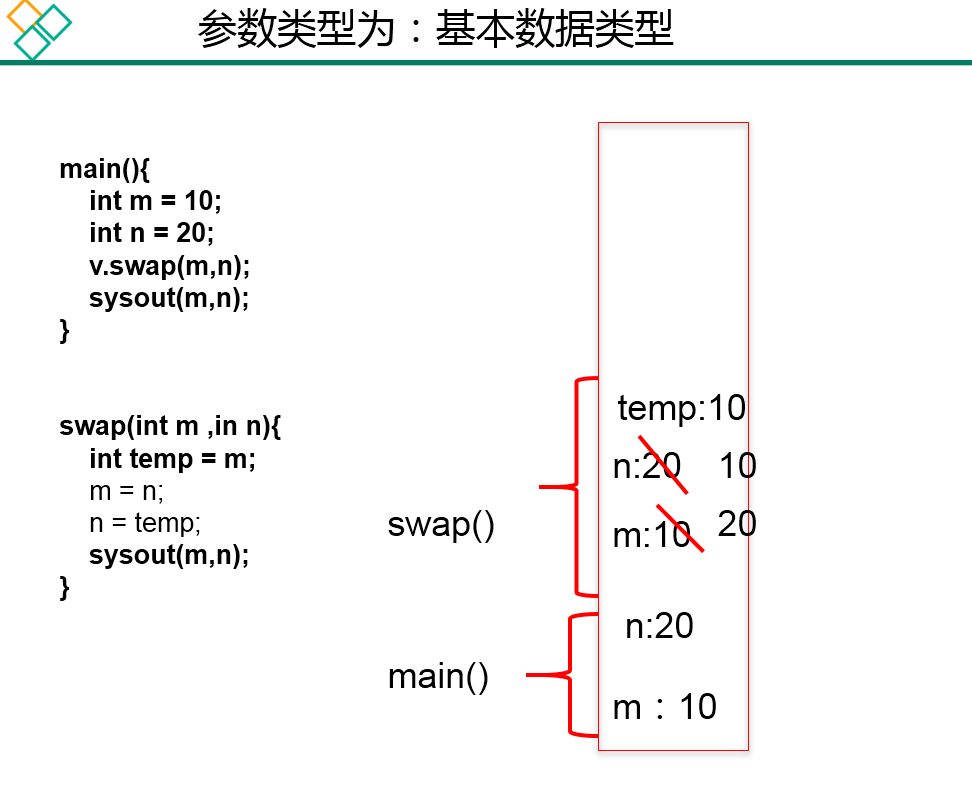
# 4.8.2、针对引用数据类型
/* | |
* 如果参数是引用数据类型，此时实参赋值给形参的是实参存储数据的地址值。 | |
*/ | |
public class ValueTransferTest2 { | |
public static void main(String[] args) { | |
Data data = new Data(); | |
data.m = 10; | |
data.n = 20; | |
System.out.println("m = " + data.m + ", n = " + data.n); | |
// 交换 m 和 n 的值 | |
// int temp = data.m; | |
// data.m = data.n; | |
// data.n = temp; | |
ValueTransferTest2 test = new ValueTransferTest2(); | |
test.swap(data); | |
System.out.println("m = " + data.m + ", n = " + data.n); | |
} | |
public void swap(Data data){ | |
int temp = data.m; | |
data.m = data.n; | |
data.n = temp; | |
} | |
} | |
class Data{ | |
int m; | |
int n; | |
} |
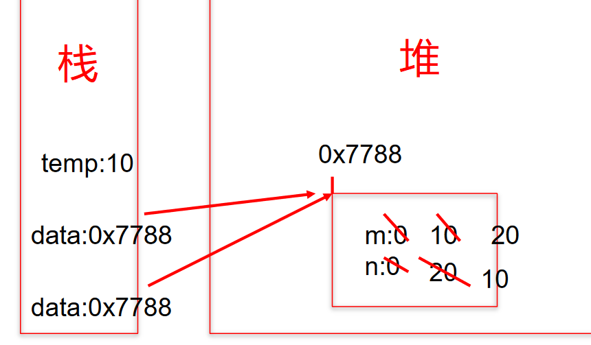
# 4.8.3、练习 1
public class TransferTest3{ | |
public static void main(String args[]){ | |
TransferTest3 test=new TransferTest3(); | |
test.first(); | |
} | |
public void first(){ | |
int i=5; | |
Value v=new Value(); | |
v.i=25; | |
second(v,i); | |
System.out.println(v.i); | |
} | |
public void second(Value v,int i){ | |
i=0; | |
v.i=20; | |
Value val=new Value(); | |
v=val; | |
System.out.println(v.i+" "+i); | |
} | |
} | |
class Value { | |
int i= 15; | |
} |
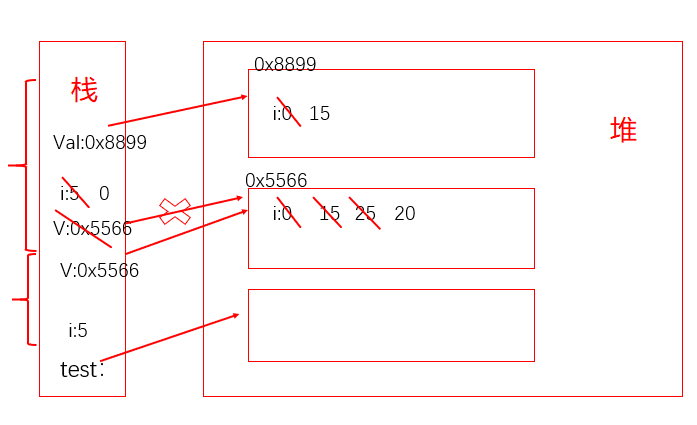
# 4.8.4、练习 2
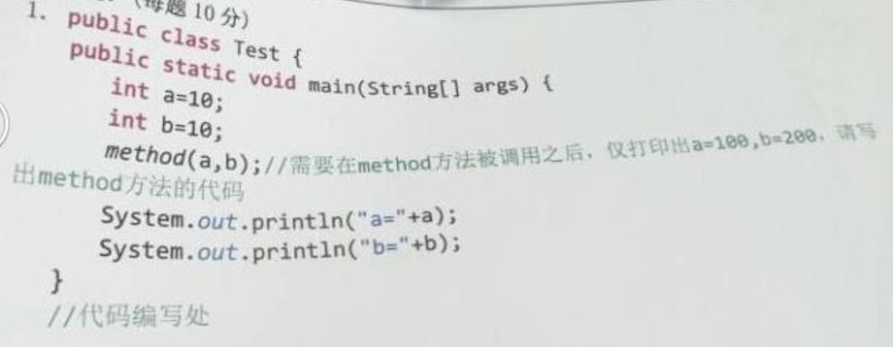
public static void method(int a,int b){ | |
a = a * 10; | |
b = b * 20; | |
System.out.println(a); | |
System.out.println(b); | |
System.exit(0); | |
} |
# 4.8.5、练习 3
/* | |
* 微软： | |
* 定义一个 int 型的数组：int [] arr = new int []{12,3,3,34,56,77,432}; | |
* 让数组的每个位置上的值去除以首位置的元素，得到的结果，作为该位置上的新值。遍历新的数组。 | |
*/ | |
// 错误写法 | |
for(int i= 0;i < arr.length;i++){ | |
arr[i] = arr[i] / arr[0]; | |
} | |
// 正确写法 1 | |
for(int i = arr.length –1;i >= 0;i--){ | |
arr[i] = arr[i] / arr[0]; | |
} | |
// 正确写法 2 | |
int temp = arr[0]; | |
for(int i= 0;i < arr.length;i++){ | |
arr[i] = arr[i] / temp; | |
} |
# 4.8.6、练习 4
/* | |
* int [] arr = new int [10]; | |
* System.out.println (arr);// 地址值？ | |
* | |
* char [] arr1 = new char [10]; | |
* System.out.println (arr1);// 地址值？ | |
*/ | |
public class ArrayPrint { | |
public static void main(String[] args) { | |
int[] arr = new int[]{ 1,2,3}; | |
// 传进去的是一个 Object 的对象 | |
System.out.println(arr);// 地址值 | |
char[] arr1 = new char[]{ 'a','b','c'}; | |
// 传进去的是一个数组，里面遍历数据了 | |
System.out.println(arr1);//abc | |
} | |
} |
# 4.8.7、练习 5：将对象作为参数传递给方法
/* | |
* 练习 5：将对象作为参数传递给方法 | |
* (1) 定义一个 Circle 类，包含一个 double 型的 radius 属性代表圆的半径，一个 findArea () 方法返回圆的面积。 | |
* | |
* (2) 定义一个类 PassObject，在类中定义一个方法 printAreas ()，该方法的定义如下： | |
* public void printAreas (Circle c,int time) | |
* 在 printAreas 方法中打印输出 1 到 time 之间的每个整数半径值，以及对应的面积。 | |
* 例如，times 为 5，则输出半径 1，2，3，4，5，以及对应的圆面积。 | |
* | |
* (3) 在 main 方法中调用 printAreas () 方法，调用完毕后输出当前半径值。 | |
* | |
*/ | |
public class Circle { | |
double radius; // 半径 | |
// 返回圆的面积 | |
public double findArea(){ | |
return radius * radius * Math.PI; | |
} | |
} |
PassObject 类
public class PassObject { | |
public static void main(String[] args) { | |
PassObject test = new PassObject(); | |
Circle c = new Circle(); | |
test.printAreas(c, 5); | |
System.out.println("no radius is:" + c.radius); | |
} | |
public void printAreas(Circle c,int time){ | |
System.out.println("Radius\t\tAreas"); | |
// 设置圆的半径 | |
for(int i = 1;i <= time ;i++){ | |
c.radius = i; | |
System.out.println(c.radius + "\t\t" + c.findArea()); | |
} | |
// 重新赋值 | |
c.radius = time + 1; | |
} | |
} |
# 4.9、递归 (recursion) 方法
/* | |
* 递归方法的使用 (了解) | |
* 1. 递归方法：一个方法体内调用它自身。 | |
* 2. 方法递归包含了一种隐式的循环，它会重复执行某段代码，但这种重复执行无须循环控制。 | |
* | |
* 3. 递归一定要向已知方向递归，否则这种递归就变成了无穷递归，类似于死循环。 | |
* | |
*/ | |
public class RecursionTest { | |
public static void main(String[] args) { | |
// 例 1: 计算 1-100 之间所有自然数的和 | |
// 方法 1: | |
int sum = 0; | |
for (int i = 1; i <= 100; i++) { | |
sum += i; | |
} | |
System.out.println("sum = " + sum); | |
// 方法 2: | |
RecursionTest test = new RecursionTest(); | |
int sum1 = test.getSum(100); | |
System.out.println("sum1 = " + sum1); | |
} | |
// 例 1: 计算 1-n 之间所有自然数的和 | |
public int getSum(int n) { | |
if (n == 1) { | |
return 1; | |
} else { | |
return n + getSum(n - 1); | |
} | |
} | |
// 例 2: 计算 1-n 之间所有自然数的乘积 | |
// 归求阶乘 (n!) 的算法 | |
public int getSum1(int n) { | |
if (n == 1) { | |
return 1; | |
} else { | |
return n * getSum1(n - 1); | |
} | |
} | |
} |
1、练习 1
public class RecursionTest { | |
public static void main(String[] args) { | |
int value = test.f(10); | |
System.out.println(value); | |
} | |
// 例 3: 已知有一个数列：f (0) = 1,f (1) = 4,f (n+2)=2*f (n+1) + f (n), | |
// 其中 n 是大于 0 的整数，求 f (10) 的值。 | |
public int f(int n){ | |
if(n == 0){ | |
return 1; | |
}else if(n == 1){ | |
return 4; | |
}else{ | |
return 2*f(n-1) + f(n-2); | |
} | |
} | |
// 例 4: 已知一个数列：f (20) = 1,f (21) = 4,f (n+2) = 2*f (n+1)+f (n), | |
// 其中 n 是大于 0 的整数，求 f (10) 的值。 | |
public int f1(int n){ | |
if(n == 20){ | |
return 1; | |
}else if(n == 21){ | |
return 4; | |
}else{ | |
return 2*f1(n-1) + f1(n-2); | |
} | |
} | |
} |
2、练习 2
/* | |
* 输入一个数据 n，计算斐波那契数列 (Fibonacci) 的第 n 个值 | |
* 1 1 2 3 5 8 13 21 34 55 | |
* 规律：一个数等于前两个数之和 | |
* 要求：计算斐波那契数列 (Fibonacci) 的第 n 个值，并将整个数列打印出来 | |
* | |
*/ | |
public class Recursion2 { | |
public static void main(String[] args) { | |
Recursion2 test = new Recursion2(); | |
int value = test.f(10); | |
System.out.println(value); | |
} | |
public int f(int n) { | |
if (n == 1 || n == 2) { | |
return 1; | |
} else { | |
return f(n - 1) + f(n - 2); | |
} | |
} | |
} |
# 05、面向对象特征之一：封装与隐藏
1、封装性的引入与体现
为什么需要封装？封装的作用和含义？ 我要用洗衣机，只需要按一下开关和洗涤模式就可以了。有必要了解洗衣机内部的结构吗？有必要碰电动机吗？ 我要开车，…
2、我们程序设计追求 “高内聚，低耦合”。
高内聚：类的内部数据操作细节自己完成，不允许外部干涉； 低耦合：仅对外暴露少量的方法用于使用。
3、隐藏对象内部的复杂性，只对外公开简单的接口。
便于外界调用，从而提高系统的可扩展性、可维护性。通俗的说，把该隐藏的隐藏起来，该暴露的暴露出来。这就是封装性的设计思想。
/* | |
* 面向对象的特征一：封装与隐藏 | |
* 一、问题的引入： | |
* 当我们创建一个类的对象以后，我们可以通过 "对象。属性" 的方式，对对象的属性进行赋值。这里，赋值操作要受到 | |
* 属性的数据类型和存储范围的制约。但除此之外，没有其他制约条件。但是，实际问题中，我们往往需要给属性赋值 | |
* 加入额外限制条件。这个条件就不能在属性声明时体现，我们只能通过方法进行条件的添加。比如说，setLegs | |
* 同时，我们需要避免用户再使用 “对象。属性” 的方式对属性进行赋值。则需要将属性声明为私有的 (private) | |
* --》此时，针对于属性就体现了封装性。 | |
* | |
* 二、封装性的体现： | |
* 我们将类的属性私有化 (private), 同时，提供公共的 (public) 方法来获取 (getXxx) 和设置 (setXxx) | |
* | |
* 拓展：封装性的体现：① 如上 ② 单例模式 ③ 不对外暴露的私有方法 | |
* | |
*/ | |
public class AnimalTest { | |
public static void main(String[] args) { | |
Animal a = new Animal(); | |
a.name = "大黄"; | |
// a.age = 1; | |
// a.legs = 4;//The field Animal.legs is not visible | |
a.show(); | |
// a.legs = -4; | |
// a.setLegs(6); | |
a.setLegs(-6); | |
// a.legs = -4;//The field Animal.legs is not visible | |
a.show(); | |
System.out.println(a.name); | |
System.out.println(a.getLegs()); | |
} | |
} | |
class Animal{ | |
String name; | |
private int age; | |
private int legs; // 腿的个数 | |
// 对于属性的设置 | |
public void setLegs(int l){ | |
if(l >= 0 && l % 2 == 0){ | |
legs = l; | |
}else{ | |
legs = 0; | |
} | |
} | |
// 对于属性的获取 | |
public int getLegs(){ | |
return legs; | |
} | |
public void eat(){ | |
System.out.println("动物进食"); | |
} | |
public void show(){ | |
System.out.println("name = " + name + ",age = " + age + ",legs = " + legs); | |
} | |
// 提供关于属性 age 的 get 和 set 方法 | |
public int getAge(){ | |
return age; | |
} | |
public void setAge(int a){ | |
age = a; | |
} | |
} |
# 5.1、四种权限修饰符的理解与测试
Java 权限修饰符 public、protected、default(缺省)、private 置于类的成员定义前，用来限定对象对该类成员的访问权限。
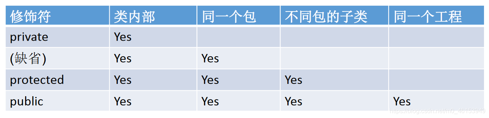
对于 class 的权限修饰只可以用 public 和 default (缺省)。
- public 类可以在任意地方被访问。
- default 类只可以被同一个包内部的类访问。
1、Order 类
/* | |
* 三、封装性的体现，需要权限修饰符来配合。 | |
* 1.Java 规定的 4 种权限：(从小到大排序) private、缺省、protected、public | |
* 2.4 种权限用来修饰类及类的内部结构：属性、方法、构造器、内部类 | |
* 3. 具体的，4 种权限都可以用来修饰类的内部结构：属性、方法、构造器、内部类 | |
* 修饰类的话，只能使用：缺省、public | |
* 总结封装性：Java 提供了 4 中权限修饰符来修饰类积累的内部结构，体现类及类的内部结构的可见性的方法。 | |
* | |
*/ | |
public class Order { | |
private int orderPrivate; | |
int orderDefault; | |
public int orderPublic; | |
private void methodPrivate(){ | |
orderPrivate = 1; | |
orderDefault = 2; | |
orderPublic = 3; | |
} | |
void methodDefault(){ | |
orderPrivate = 1; | |
orderDefault = 2; | |
orderPublic = 3; | |
} | |
public void methodPublic(){ | |
orderPrivate = 1; | |
orderDefault = 2; | |
orderPublic = 3; | |
} | |
} |
2、OrderTest 类
public class OrderTest { | |
public static void main(String[] args) { | |
Order order = new Order(); | |
order.orderDefault = 1; | |
order.orderPublic = 2; | |
// 出了 Order 类之后，私有的结构就不可调用了 | |
// order.orderPrivate = 3;//The field Order.orderPrivate is not visible | |
order.methodDefault(); | |
order.methodPublic(); | |
// 出了 Order 类之后，私有的结构就不可调用了 | |
// order.methodPrivate();//The method methodPrivate() from the type Order is not visible | |
} | |
} |
相同项目不同包的 OrderTest 类
import github.Order; | |
public class OrderTest { | |
public static void main(String[] args) { | |
Order order = new Order(); | |
order.orderPublic = 2; | |
// 出了 Order 类之后，私有的结构、缺省的声明结构就不可调用了 | |
// order.orderDefault = 1; | |
// order.orderPrivate = 3;//The field Order.orderPrivate is not visible | |
order.methodPublic(); | |
// 出了 Order 类之后，私有的结构、缺省的声明结构就不可调用了 | |
// order.methodDefault(); | |
// order.methodPrivate();//The method methodPrivate() from the type Order is not visible | |
} | |
} |
# 5.2、封装性的练习
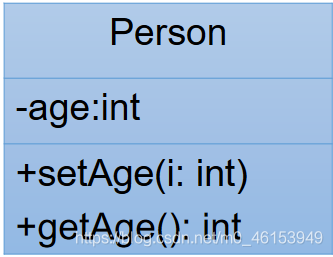
/* | |
* 1. 创建程序，在其中定义两个类：Person 和 PersonTest 类。 | |
* 定义如下：用 setAge () 设置人的合法年龄 (0~130)，用 getAge () 返回人的年龄。 | |
* | |
*/ | |
public class Person { | |
private int age; | |
public void setAge(int a){ | |
if(a < 0 || a > 130){ | |
// throw new RuntimeException ("传入的数据据非法"); | |
System.out.println("传入的数据据非法"); | |
return; | |
} | |
age = a; | |
} | |
public int getAge(){ | |
return age; | |
} | |
// 绝对不能这样写！！！ | |
public int doAge(int a){ | |
age = a; | |
return age; | |
} | |
} |
3、测试类
/* | |
* 在 PersonTest 类中实例化 Person 类的对象 b， | |
* 调用 setAge () 和 getAge () 方法，体会 Java 的封装性。 | |
*/ | |
public class PersonTest { | |
public static void main(String[] args) { | |
Person p1 = new Person(); | |
// p1.age = 1; // 编译不通过 | |
p1.setAge(12); | |
System.out.println("年龄为:" + p1.getAge()); | |
} | |
} |
# 06、构造器 (构造方法)
# 6.1、构造器的理解
/* | |
* 类的结构之三：构造器 (构造方法、constructor) 的使用 | |
* constructor: | |
* | |
* 一、构造器的作用: | |
* 1. 创建对象 | |
* 2. 初始化对象的属性 | |
* | |
* 二、说明 | |
* 1. 如果没有显示的定义类的构造器的话，则系统默认提供一个空参的构造器。 | |
* 2. 定义构造器的格式: | |
* 权限修饰符 类名 (形参列表) { } | |
* 3. 一个类中定义的多个构造器，彼此构成重载。 | |
* 4. 一旦显示的定义了类的构造器之后，系统不再提供默认的空参构造器。 | |
* 5. 一个类中，至少会有一个构造器 | |
*/ | |
public class PersonTest { | |
public static void main(String[] args) { | |
// 创建类的对象:new + 构造器 | |
Person p = new Person(); //Person () 这就是构造器 | |
p.eat(); | |
Person p1 = new Person("Tom"); | |
System.out.println(p1.name); | |
} | |
} | |
class Person{ | |
// 属性 | |
String name; | |
int age; | |
// 构造器 | |
public Person(){ | |
System.out.println("Person()......"); | |
} | |
public Person(String n){ | |
name = n; | |
} | |
public Person(String n,int a){ | |
name = n; | |
age = a; | |
} | |
// 方法 | |
public void eat(){ | |
System.out.println("人吃饭"); | |
} | |
public void study(){ | |
System.out.println("人学习"); | |
} | |
} |
1、练习 1
/* 2. 在前面定义的 Person 类中添加构造器， | |
* 利用构造器设置所有人的 age 属性初始值都为 18。 | |
* | |
*/ | |
public class Person { | |
private int age; | |
public Person(){ | |
age = 18; | |
} | |
} | |
public class PersonTest { | |
public static void main(String[] args) { | |
Person p1 = new Person(); | |
System.out.println("年龄为:" + p1.getAge()); | |
} | |
} |
2、练习 2
/* 3. 修改上题中类和构造器，增加 name 属性， | |
* 使得每次创建 Person 对象的同时初始化对象的 age 属性值和 name 属性值。 | |
*/ | |
public class Person { | |
private int age; | |
private String name; | |
public Person(){ | |
age = 18; | |
} | |
public Person(String n,int a){ | |
name = n; | |
age = a; | |
} | |
public void setName(String n){ | |
name = n; | |
} | |
public String getName(){ | |
return name; | |
} | |
public void setAge(int a){ | |
if(a < 0 || a > 130){ | |
// throw new RuntimeException ("传入的数据据非法"); | |
System.out.println("传入的数据据非法"); | |
return; | |
} | |
age = a; | |
} | |
public int getAge(){ | |
return age; | |
} | |
} | |
public class PersonTest { | |
public static void main(String[] args) { | |
Person p2 = new Person("Tom",21); | |
System.out.println("name = " + p2.getName() + ",age = " + p2.getAge()); | |
} | |
} |
3、练习 3
/* | |
* 编写两个类，TriAngle 和 TriAngleTest， | |
* 其中 TriAngle 类中声明私有的底边长 base 和高 height，同时声明公共方法访问私有变量。 | |
* 此外，提供类必要的构造器。另一个类中使用这些公共方法，计算三角形的面积。 | |
* | |
*/ | |
public class TriAngle { | |
private double base;// 底边长 | |
private double height;// 高 | |
public TriAngle(){ | |
} | |
public TriAngle(double b,double h){ | |
base = b; | |
height = h; | |
} | |
public void setBase(double b){ | |
base = b; | |
} | |
public double getBase(){ | |
return base; | |
} | |
public void setHeight(double h){ | |
height = h; | |
} | |
public double getHeight(){ | |
return height; | |
} | |
} | |
public class TriAngleTest { | |
public static void main(String[] args) { | |
TriAngle t1 = new TriAngle(); | |
t1.setBase(2.0); | |
t1.setHeight(2.5); | |
// t1.base = 2.5;//The field TriAngle.base is not visible | |
// t1.height = 4.3; | |
System.out.println("base : " + t1.getBase() + ",height : " + t1.getHeight()); | |
TriAngle t2 = new TriAngle(5.1,5.6); | |
System.out.println("面积 : " + t2.getBase() * t2.getHeight() / 2); | |
} | |
} |
# 6.2、总结属性赋值的过程
/* | |
* 总结：属性赋值的先后顺序 | |
* | |
* ① 默认初始化值 | |
* ② 显式初始化 | |
* ③ 构造器中赋值 | |
* ④ 通过 "对象。方法" 或 “对象。属性” 的方式，赋值 | |
* | |
* 以上操作的先后顺序:① - ② - ③ - ④ | |
* | |
*/ | |
public class UserTest { | |
public static void main(String[] args) { | |
User u = new User(); | |
System.out.println(u.age); | |
User u1 = new User(2); | |
u1.setAge(3); | |
System.out.println(u1.age); | |
} | |
} | |
class User{ | |
String name; | |
int age = 1; | |
public User(){ | |
} | |
public User(int a){ | |
age = a; | |
} | |
public void setAge(int a){ | |
age = a; | |
} | |
} |
# 6.3、JavaBean 的使用
/* | |
* JavaBean 是一种 Java 语言写成的可重用组件。 | |
* 所谓 javaBean，是指符合如下标准的 Java 类： | |
* > 类是公共的 | |
* > 有一个无参的公共的构造器 | |
* > 有属性，且有对应的 get、set 方法 | |
* | |
*/ | |
public class Customer { | |
private int id; | |
private String name; | |
public Customer(){ | |
} | |
public void setId(int i){ | |
id = i; | |
} | |
public int getId(){ | |
return id; | |
} | |
public void setName(String n){ | |
name = n; | |
} | |
public String getName(){ | |
return name; | |
} | |
} |
# 6.4、UML 类图
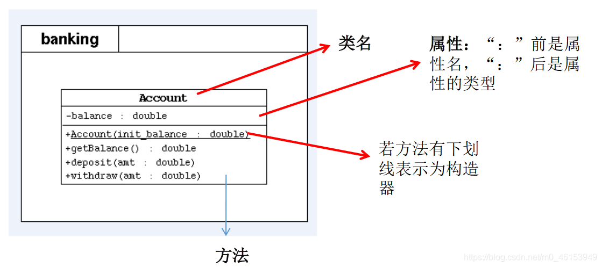
- 表示 public 类型，- 表示 private 类型，# 表示 protected 类型
- 方法的写法：方法的类型 (+、-) 方法名 (参数名：参数类型)：返回值类型
# 07、关键字：this 的使用
# 7.1、this 调用属性、方法、构造器
/* | |
* this 关键字的使用 | |
* 1.this 用来修饰、调用：属性、方法、构造器 | |
* | |
* 2.this 修饰属性和方法: | |
* this 理解为：当前对象，或当前正在创建的对象。 | |
* | |
* 2.1 在类的方法中，我们可以使用 "this. 属性" 或 "this. 方法" 的方式，调用当前对象属性和方法。 | |
* 通常情况下，我们都选择省略 “this.”。特殊情况下，如果方法的形参和类的属性同名，我们必须显式 | |
* 的使用 "this. 变量" 的方式，表明此变量是属性，而非形参。 | |
* | |
* 2.2 在类的构造器中，我们可以使用 "this. 属性" 或 "this. 方法" 的方式，调用正在创建的对象属性和方法。 | |
* 但是，通常情况下，我们都选择省略 “this.”。特殊情况下，如果构造器的形参和类的属性同名，我们必须显式 | |
* 的使用 "this. 变量" 的方式，表明此变量是属性，而非形参。 | |
* | |
* 3.this 调用构造器 | |
* ① 我们可以在类的构造器中，显式的使用 "this (形参列表)" 的方式，调用本类中重载的其他的构造器！ | |
* ② 构造器中不能通过 "this (形参列表)" 的方式调用自己。 | |
* ③ 如果一个类中声明了 n 个构造器，则最多有 n -1 个构造器中使用了 "this (形参列表)"。 | |
* ④ "this (形参列表)" 必须声明在类的构造器的首行！ | |
* ⑤ 在类的一个构造器中，最多只能声明一个 "this (形参列表)"。 | |
*/ | |
public class PersonTest { | |
public static void main(String[] args) { | |
Person p1 = new Person(); | |
p1.setAge(1); | |
System.out.println(p1.getAge()); | |
p1.eat(); | |
System.out.println(); | |
Person p2 = new Person("jerry" ,20); | |
System.out.println(p2.getAge()); | |
} | |
} | |
class Person{ | |
private String name; | |
private int age; | |
public Person(){ | |
this.eat(); | |
String info = "Person 初始化时，需要考虑如下的 1,2,3,4...(共 40 行代码)"; | |
System.out.println(info); | |
} | |
public Person(String name){ | |
this(); | |
this.name = name; | |
} | |
public Person(int age){ | |
this(); | |
this.age = age; | |
} | |
public Person(String name,int age){ | |
this(age); // 调用构造器的一种方式 | |
this.name = name; | |
// this.age = age; | |
} | |
public void setNmea(String name){ | |
this.name = name; | |
} | |
public String getName(){ | |
return this.name; | |
} | |
public void setAge(int age){ | |
this.age = age; | |
} | |
public int getAge(){ | |
return this.age; | |
} | |
public void eat(){ | |
System.out.println("人吃饭"); | |
this.study(); | |
} | |
public void study(){ | |
System.out.println("学习"); | |
} | |
} |
# 7.2、this 的练习
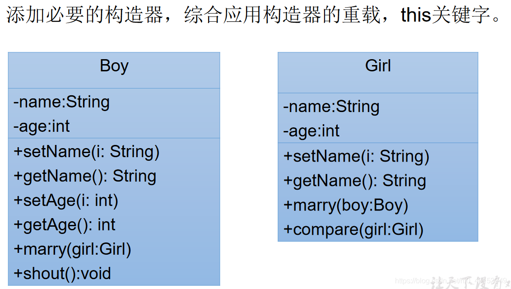
1、Boy 类
public class Boy { | |
private String name; | |
private int age; | |
public void setName(String name){ | |
this.name = name; | |
} | |
public String getName(){ | |
return name; | |
} | |
public void setAge(int ahe){ | |
this.age = age; | |
} | |
public int getAge(){ | |
return age; | |
} | |
public Boy(String name, int age) { | |
this.name = name; | |
this.age = age; | |
} | |
public void marry(Girl girl){ | |
System.out.println("我想娶" + girl.getName()); | |
} | |
public void shout(){ | |
if(this.age >= 22){ | |
System.out.println("可以考虑结婚"); | |
}else{ | |
System.out.println("好好学习"); | |
} | |
} | |
} |
2、Girl 类
public class Girl { | |
private String name; | |
private int age; | |
public String getName() { | |
return name; | |
} | |
public void setName(String name) { | |
this.name = name; | |
} | |
public Girl(){ | |
} | |
public Girl(String name, int age) { | |
this.name = name; | |
this.age = age; | |
} | |
public void marry(Boy boy){ | |
System.out.println("我想嫁给" + boy.getName()); | |
} | |
/** | |
* | |
* @Description 比较两个对象的大小 | |
* @author subei | |
* @date 2020 年 4 月 21 日上午 9:17:35 | |
* @param girl | |
* @return | |
*/ | |
public int compare(Girl girl){ | |
// if(this.age >girl.age){ | |
// return 1; | |
// }else if(this.age < girl.age){ | |
// return -1; | |
// }else{ | |
// return 0; | |
// } | |
return this.age - girl.age; | |
} | |
} |
3、测试类
public class BoyGirlTest { | |
public static void main(String[] args) { | |
Boy boy = new Boy("罗密欧",21); | |
boy.shout(); | |
Girl girl = new Girl("朱丽叶", 18); | |
girl.marry(boy); | |
Girl girl1 = new Girl("祝英台", 19); | |
int compare = girl.compare(girl1); | |
if(compare > 0){ | |
System.out.println(girl.getName() + "大"); | |
}else if(compare < 0){ | |
System.out.println(girl1.getName() + "大"); | |
}else{ | |
System.out.println("一样的"); | |
} | |
} | |
} |
2、练习 2
Account 类
public class Account { | |
private int id; // 账号 | |
private double balance; // 余额 | |
private double annualInterestRate; // 年利率 | |
public void setId(int id) { | |
} | |
public double getBalance() { | |
return balance; | |
} | |
public void setBalance(double balance) { | |
this.balance = balance; | |
} | |
public double getAnnualInterestRate() { | |
return annualInterestRate; | |
} | |
public void setAnnualInterestRate(double annualInterestRate) { | |
this.annualInterestRate = annualInterestRate; | |
} | |
public int getId() { | |
return id; | |
} | |
public void withdraw(double amount) { // 取钱 | |
if(balance < amount){ | |
System.out.println("余额不足，取款失败"); | |
return; | |
} | |
balance -= amount; | |
System.out.println("成功取出" + amount); | |
} | |
public void deposit(double amount) { // 存钱 | |
if(amount > 0){ | |
balance += amount; | |
System.out.println("成功存入" + amount); | |
} | |
} | |
public Account(int id, double balance, double annualInterestRate) { | |
this.id = id; | |
this.balance = balance; | |
this.annualInterestRate = annualInterestRate; | |
} | |
} |
Customer 类
public class Customer { | |
private String firstName; | |
private String lastName; | |
private Account account; | |
public Customer(String f, String l) { | |
this.firstName = f; | |
this.lastName = l; | |
} | |
public String getFirstName() { | |
return firstName; | |
} | |
public String getLastName() { | |
return lastName; | |
} | |
public Account getAccount() { | |
return account; | |
} | |
public void setAccount(Account account) { | |
this.account = account; | |
} | |
} |
CustomerTest 类
/* | |
* 写一个测试程序。 | |
* （1）创建一个 Customer，名字叫 Jane Smith, 他有一个账号为 1000， | |
* 余额为 2000 元，年利率为 1.23％的账户。 | |
* （2）对 Jane Smith 操作。存入 100 元，再取出 960 元。再取出 2000 元。 | |
* 打印出 Jane Smith 的基本信息 | |
* | |
* 成功存入：100.0 | |
* 成功取出：960.0 | |
* 余额不足，取款失败 | |
* Customer [Smith, Jane] has a account: id is 1000, | |
* annualInterestRate is 1.23％, balance is 1140.0 | |
* | |
*/ | |
public class CustomerTest { | |
public static void main(String[] args) { | |
Customer cust = new Customer("Jane" , "Smith"); | |
Account acct = new Account(1000,2000,0.0123); | |
cust.setAccount(acct); | |
cust.getAccount().deposit(100); // 存入 100 | |
cust.getAccount().withdraw(960); // 取钱 960 | |
cust.getAccount().withdraw(2000); // 取钱 2000 | |
System.out.println("Customer[" + cust.getLastName() + cust.getFirstName() + "] has a account: id is " | |
+ cust.getAccount().getId() + ",annualInterestRate is " + cust.getAccount().getAnnualInterestRate() * 100 + "%, balance is " | |
+ cust.getAccount().getBalance()); | |
} | |
} |
3、练习 3
Account 类
public class Account { | |
private double balance; | |
public double getBalance() { | |
return balance; | |
} | |
public Account(double init_balance){ | |
this.balance = init_balance; | |
} | |
// 存钱操作 | |
public void deposit(double amt){ | |
if(amt > 0){ | |
balance += amt; | |
System.out.println("存钱成功"); | |
} | |
} | |
// 取钱操作 | |
public void withdraw(double amt){ | |
if(balance >= amt){ | |
balance -= amt; | |
System.out.println("取钱成功"); | |
}else{ | |
System.out.println("余额不足"); | |
} | |
} | |
} |
Customer 类
public class Customer { | |
private String firstName; | |
private String lastName; | |
private Account account; | |
public String getFirstName() { | |
return firstName; | |
} | |
public String getLastName() { | |
return lastName; | |
} | |
public Account getAccount() { | |
return account; | |
} | |
public void setAccount(Account account) { | |
this.account = account; | |
} | |
public Customer(String f, String l) { | |
this.firstName = f; | |
this.lastName = l; | |
} | |
} |
Bank 类
public class Bank { | |
private int numberOfCustomers; // 记录客户的个数 | |
private Customer[] customers; // 存放多个客户的数组 | |
public Bank(){ | |
customers = new Customer[10]; | |
} | |
// 添加客户 | |
public void addCustomer(String f,String l){ | |
Customer cust = new Customer(f,l); | |
// customers[numberOfCustomers] = cust; | |
// numberOfCustomers++; | |
customers[numberOfCustomers++] = cust; | |
} | |
// 获取客户的个数 | |
public int getNumberOfCustomers() { | |
return numberOfCustomers; | |
} | |
// 获取指定位置上的客户 | |
public Customer getCustomers(int index) { | |
// return customers; // 可能报异常 | |
if(index >= 0 && index < numberOfCustomers){ | |
return customers[index]; | |
} | |
return null; | |
} | |
} |
BankTest 类
public class BankTest { | |
public static void main(String[] args) { | |
Bank bank = new Bank(); | |
bank.addCustomer("Jane", "Smith"); | |
bank.getCustomers(0).setAccount(new Account(2000)); | |
bank.getCustomers(0).getAccount().withdraw(500); | |
double balance = bank.getCustomers(0).getAccount().getBalance(); | |
System.out.println("客户: " + bank.getCustomers(0).getFirstName() + "的账户余额为：" + balance); | |
System.out.println("***************************"); | |
bank.addCustomer("万里", "杨"); | |
System.out.println("银行客户的个数为: " + bank.getNumberOfCustomers()); | |
} | |
} |
# 08、 关键字：package、import 的使用
# 8.1、关键字 —package
/* | |
* 一、package 关键字的使用 | |
* 1. 为了更好的实现项目中类的管理，提供包的概念 | |
* 2. 使用 package 声明类或接口所属的包，声明在源文件的首行 | |
* 3. 包，属于标识符，遵循标识符的命名规则、规范 "见名知意" | |
* 4. 每 “.” 一次，就代表一层文件目录。 | |
* | |
* 补充：同一个包下，不能命名同名接口或同名类 | |
* 不同包下，可以命名同名的接口、类。 | |
* | |
*/ | |
public class PackageImportTest { | |
} |
JDK 中主要的包介绍
1.java.lang----包含一些 Java 语言的核心类，如 String、Math、Integer、System 和 Thread，提供常用功能 | |
2.java.net----包含执行与网络相关的操作的类和接口。 | |
3.java.io----包含能提供多种输入/输出功能的类。 | |
4.java.util----包含一些实用工具类，如定义系统特性、接口的集合框架类、使用与日期日历相关的函数。 | |
5.java.text----包含了一些 java 格式化相关的类 | |
6.java.sql----包含了 java 进行 JDBC 数据库编程的相关类/接口 | |
7.java.awt----包含了构成抽象窗口工具集（abstractwindowtoolkits）的多个类，这些类被用来构建和管理应用程序的图形用户界面(GUI)。B/S C/S |
# 8.2、MVC 设计模式
MVC 是常用的设计模式之一，将整个程序分为三个层次： 视图模型层，控制器层，数据模型层 。这种将程序输入输出、数据处理，以及数据的展示分离开来的设计模式使程序结构变的灵活而且清晰，同时也描述了程序各个对象间的通信方式，降低了程序的耦合性。
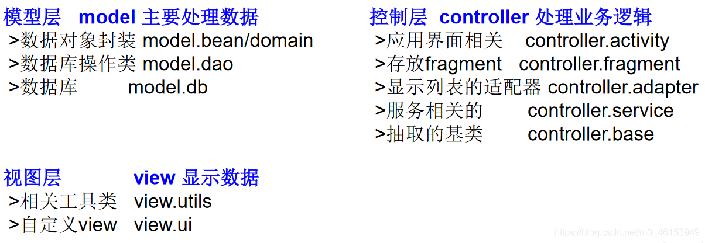
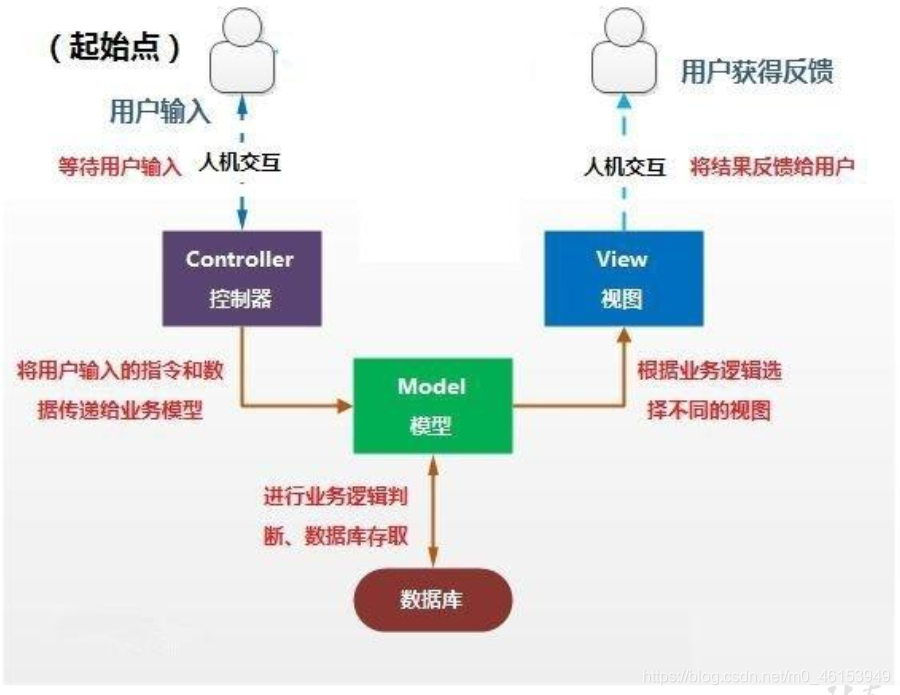
# 8.3、关键字 —import
import java.util.*; | |
import account2.Bank; | |
/* | |
* 二、import 关键字的使用 | |
* import: 导入 | |
* 1. 在源文件中显式的使用 import 结构导入指定包下的类、接口 | |
* 2. 声明在包的声明和类的声明之间 | |
* 3. 如果需要导入多个结构，则并列写出即可 | |
* 4. 可以使用 "xxx.*" 的方式，表示可以导入 xxx 包下的所有结构。 | |
* 5. 如果导入的类或接口是 java.lang 包下的，或者是当前包下的，则可以省略此 import 语句。 | |
* 6. 如果在代码中使用不同包下的同名的类。那么就需要使用类的全类名的方式指明调用的是哪个类。 | |
* 7. 如果已经导入 java.a 包下的类。那么如果需要使用 a 包的子包下的类的话，仍然需要导入。 | |
* 8.import static 组合的使用：调用指定类或接口下的静态的属性或方法. | |
* | |
*/ | |
public class PackageImportTest { | |
public static void main(String[] args) { | |
String info = Arrays.toString(new int[]{ 1,2,3}); | |
Bank bank = new Bank(); | |
ArrayList list = new ArrayList(); | |
HashMap map = new HashMap(); | |
Scanner s = null; | |
System.out.println("hello"); | |
UserTest us = new UserTest(); | |
} | |
} |